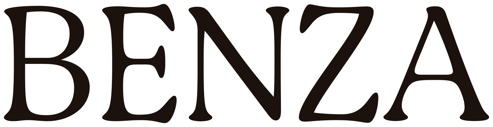

as quatro linhas
as quatro linhas
Um sistema, quatro climas. Wordmark e tagline vetorizados das suas explorações; linhas em Cormorant Garamond, corpo em Hanken Grotesk, códigos em DM Mono.
N°1 · Ritual noturno
baixa luz, uma fonte só, a noite inteira
Penumbra


Fundo · Terra noturna#260F05
Wordmark · Coral#E3876A
Tom sobre tom · Cacau#411E0E
Texto · Areia#DCCBB6
Óleos de massagem, velas, toys para dois. A linha que abre o site e o manifesto.

Penumbra[Óleo de massagem]100 ml
Penumbra
[Vela de massagem]180 g
Tudo pro ritual noturno
Ver a linha →
N°2 · Sozinha primeiro
botânicos, folha, o próprio corpo
Mata


Fundo · Musgo#262505
Wordmark · Coral#E3876A
Tom sobre tom · Oliva#393709
Acento · Urucum#E9562E
Toys de uso solo, óleos botânicos, ervas. A camada brasileira como conteúdo.
Mata
[Óleo botânico]50 ml
Mata
[Ervas de banho]120 g
Sozinha primeiro
Ver a linha →
N°3 · Depois / cuidado
água, pele, o depois que importa
Rio

Fundo · Raiz#372B0A
Wordmark · Areia#DCCBB6
Acento · Rio#226B8E
Texto acento · Rio claro#86AFC0
Lubrificantes à base d'água, higiene íntima, cuidado pós. O registro mais fresco do sistema.
Rio
[Lubrificante]100 ml
Rio
[Sabonete íntimo]200 ml
Depois / cuidado
Ver a linha →
N°4 · Antes de saber o que vai acontecer
a faísca, o convite, a bolsa pronta
Brasa


Fundo · Vinho#2D110F
Wordmark · Areia#DCCBB6
Acento · Terracota#BA6139
Tom sobre tom · Vinho fundo#280D0B
Kits de bolsa, perfumes de pele, lubrificantes de viagem. O “keys, lip balm, the good kind of secret”.
Brasa
[Kit de bolsa]3 itens
Brasa
[Lubrificante viagem]30 ml
Antes de saber o que vai acontecer
Ver a linha →